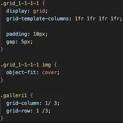

Grundlæggende web
Formålet med tema 2 var, at vi skulle lære om brugergrænseflader. Det indebar alt fra filformater og designkonventioner til rettighedslicenser og diverse computerbaserede værktøjer som Figma og Photoshop.
02.01.02 Studiestartsprøven
Indhold og opbygning følger et udleveret wireframe og layoutdiagram. Jeg anvendte css grids på forskellige måder, samt relevante media queries så sitet er responsivt.
Opgaven lærte mig vigtigheden af at arbejde mobile-first, hvilket jeg senere har gjort i alle mine projekter. Det var et af vores første møder med CSS, og det var også det, der var det sværeste for mig.
Eksempel på, hvordan et grid kan anvendes til at skabe en billedeserie.
